Curated performance metrics, publication-ready evaluation charts, model comparisons, and interactive system diagrams ready for slide decks and project presentations.
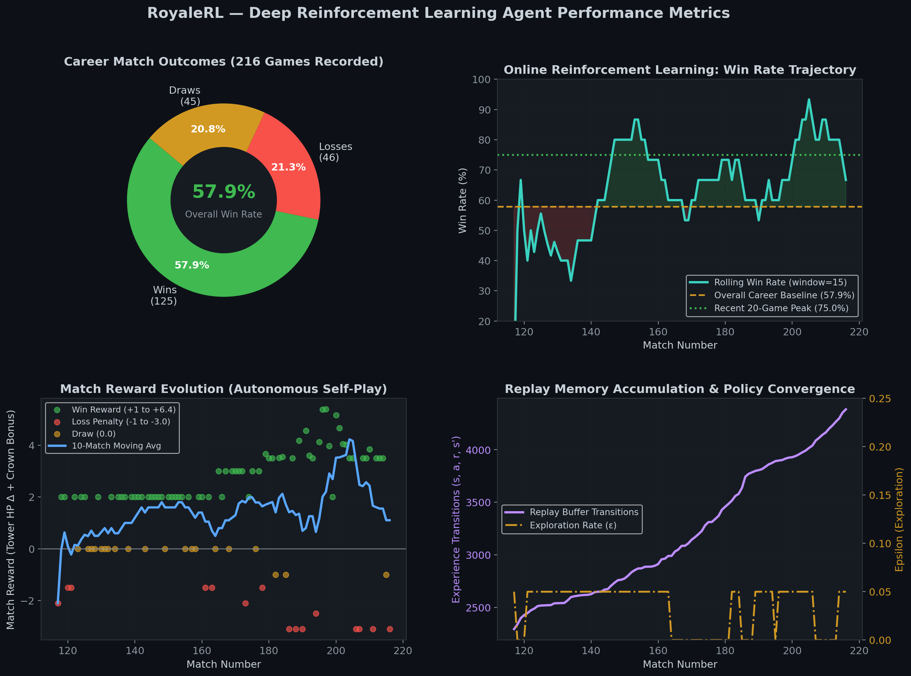
Comprehensive 4-panel analysis of 216 self-play matches: Career outcome distribution, rolling win-rate progression reaching 75%, reward evolution, and buffer experience accumulation.
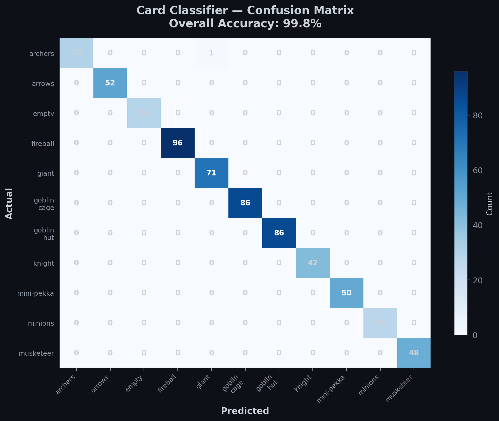
Evaluation of MobileNetV2 hand classifier across all 11 card categories (Giant, Musketeer, Archers, Knight, Spells, and Empty slots).
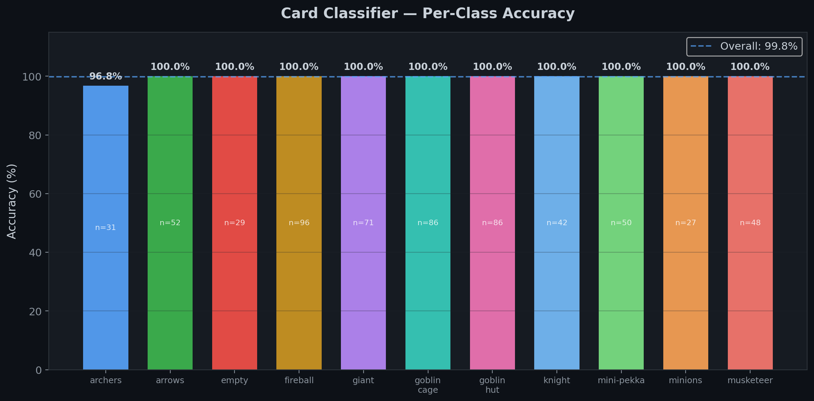
Detailed accuracy breakdown for each card in the deck under in-game lighting, shadow, and elixir border changes.
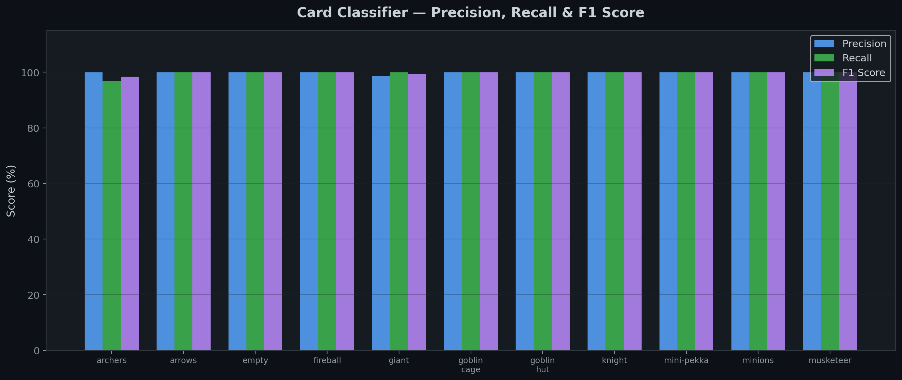
Triple-metric statistical benchmark illustrating balanced recall and precision across troop types and spells.
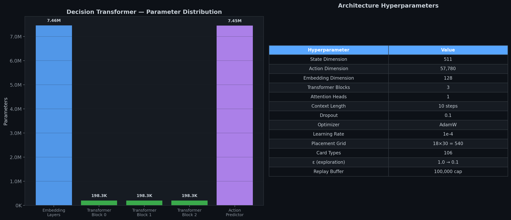
Structural breakdown of the sequence-modeling Decision Transformer: multi-head self-attention blocks, context window, and imitation loss curve.
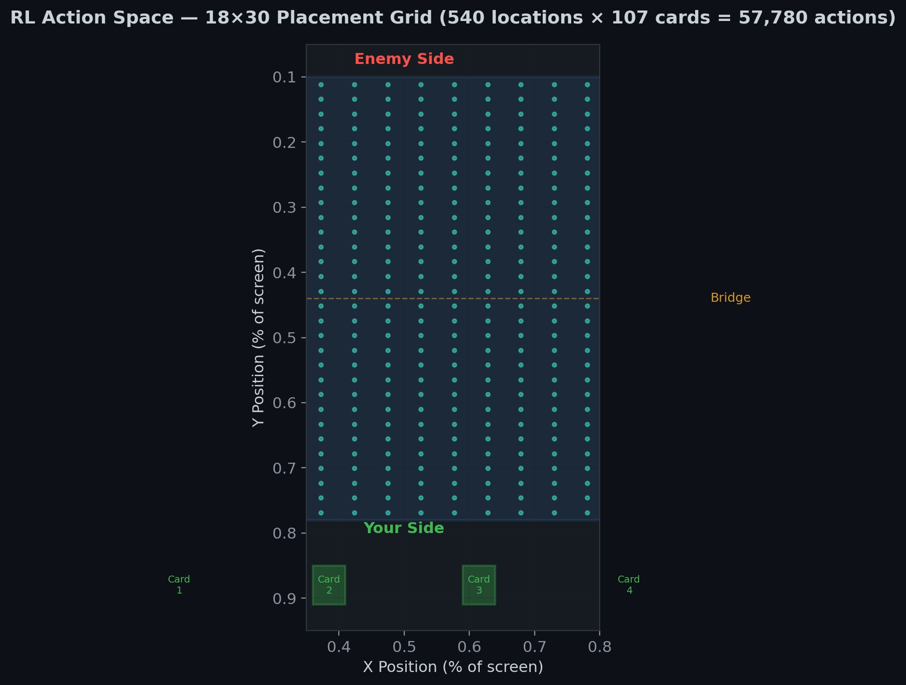
Visualization of the 18×30 arena tile discretization mapped against card selection choices and coordinate bounds.
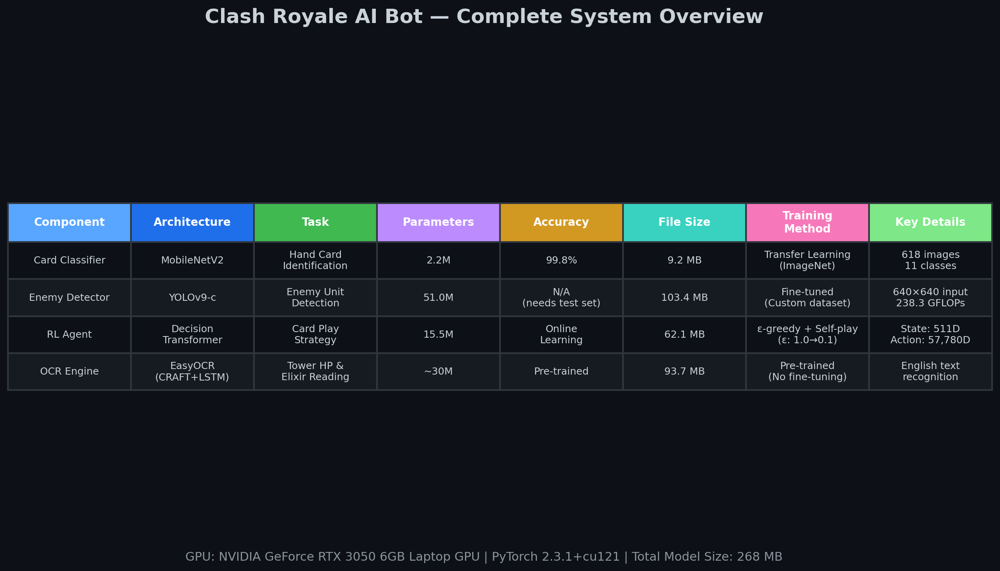
High-level flow diagram from ADB frame capture and YOLO detection through tactical heuristics and deep neural inference.
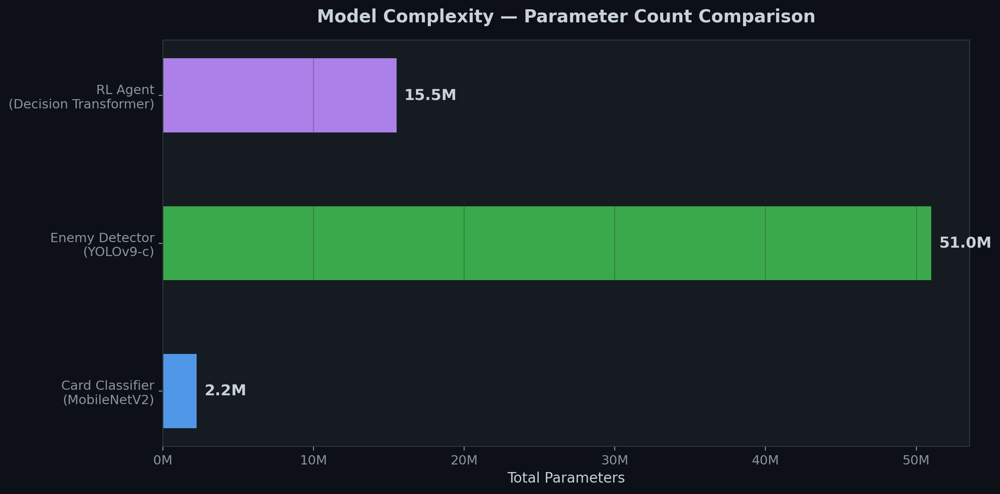
Comparison of model complexity across Vision (MobileNetV2), Detector (YOLO), and Policy Network (Decision Transformer).
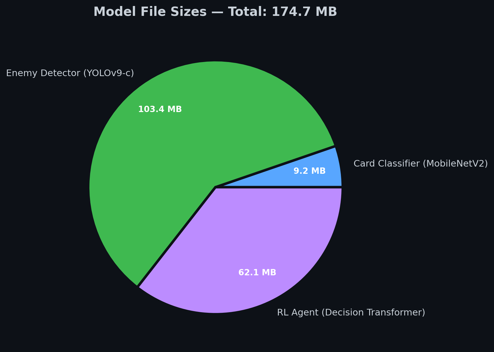
Disk footprint comparison of trained weight checkpoints and binary buffer stores.
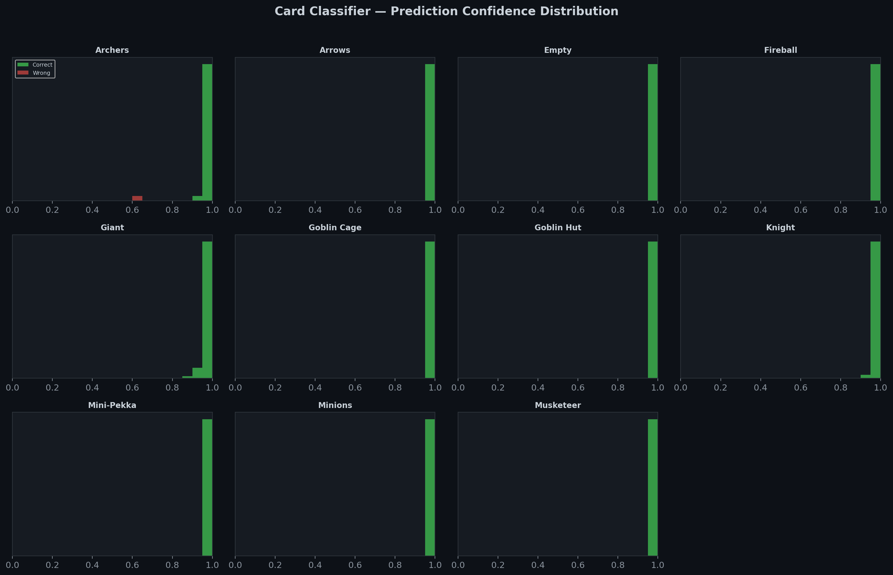
Probability calibration analysis comparing confidence histograms on correct vs ambiguous card frames.
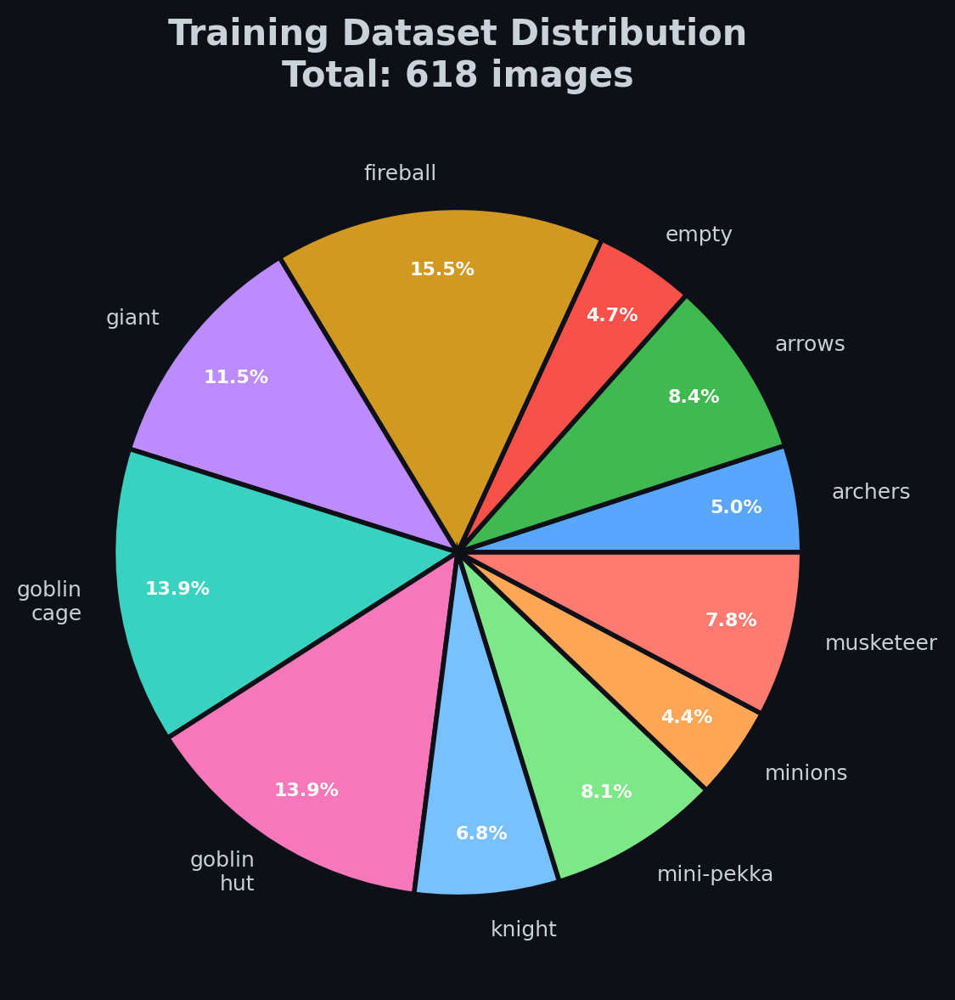
Distribution of collected and augmented card crops sampled across varied arenas and deck rotations.
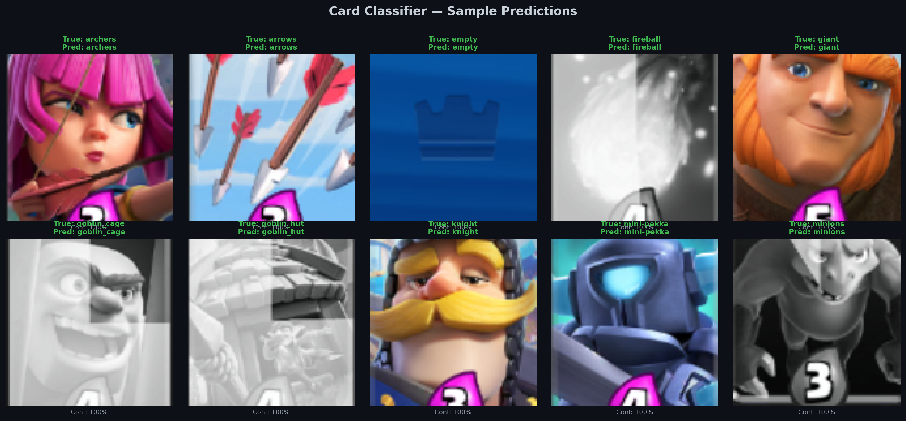
Real visual samples extracted directly from live emulator sessions with ground truth labels and predicted probabilities.